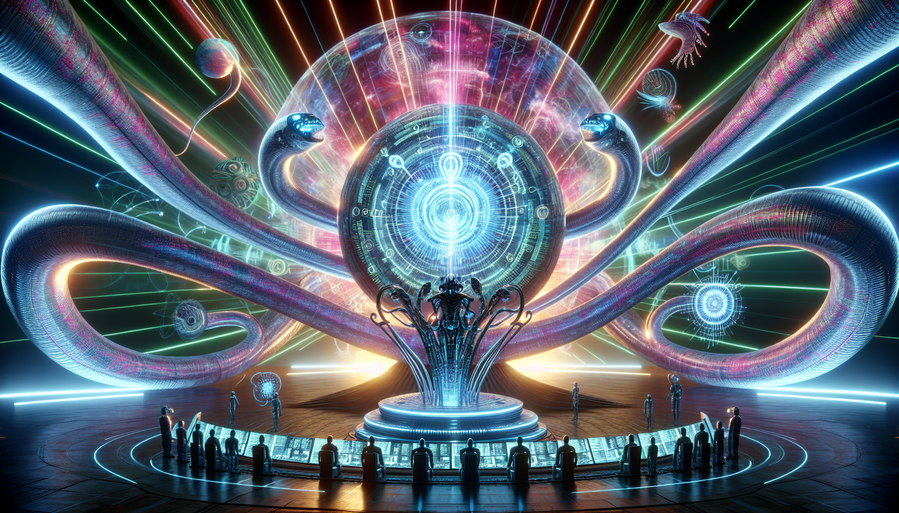

Python and the Future of AI
Python has become one of the most popular programming languages in recent years, and it's not hard to see why. With its simple syntax and powerful libraries, Python has become a go-to language for many developers, especially in the field of AI and machine learning. As we continue to rely more and more on technology, the demand for AI and machine learning applications is only going to increase, making Python an essential tool for the future.
One of the main reasons Python is so well-suited for AI and machine learning is its versatility. It can handle both structured and unstructured data, making it ideal for processing large sets of data for training machine learning models. Additionally, Python has a vast collection of libraries specifically designed for AI and machine learning, such as TensorFlow, Keras, and PyTorch. These libraries make it easier for developers to build and train complex models, saving them time and effort. With the continuous growth and development of these libraries, Python will only become more powerful and important in the future of AI.
In conclusion, Python's user-friendly syntax and robust libraries make it an ideal language for developing AI and machine learning applications. As technology continues to advance, the demand for AI and machine learning will only increase, making Python a